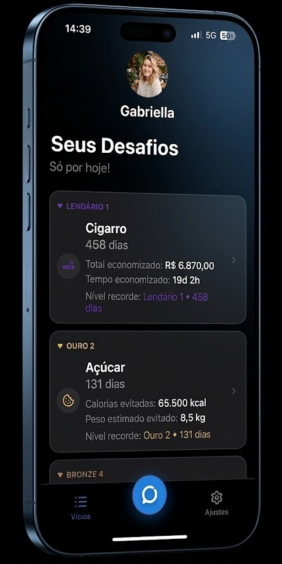

Quanto dinheiro você está perdendo e o quanto sua produtividade e autoestima poderiam ser maiores?
O problema não é falta de força.
É falta de controle.A ODAT ajuda você a acompanhar seu progresso, analisar seus hábitos e manter-se motivado na sua jornada de automelhoria.

Acompanhe, em tempo real: o dinheiro que deixa de perder, o tempo que está recuperando e a evolução que está construindo.
Com níveis e recompensas, você não apenas abandona hábitos. Você constrói uma nova versão de si mesmo.